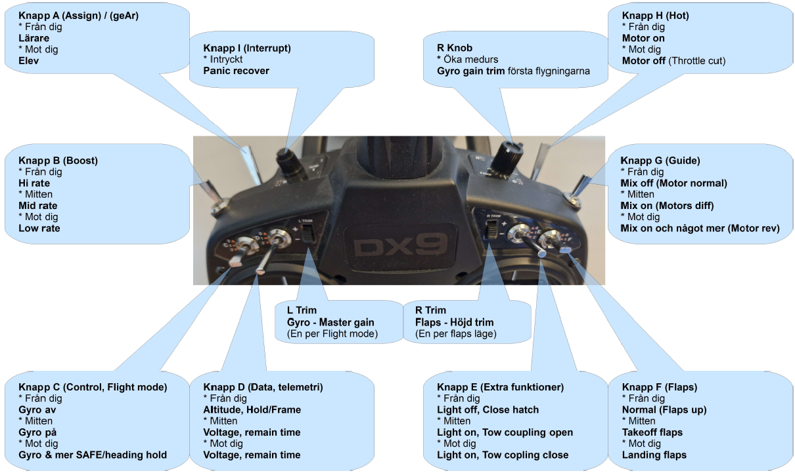
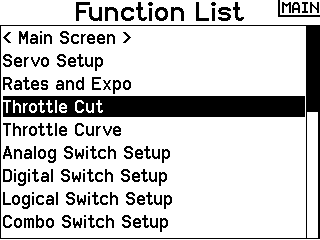
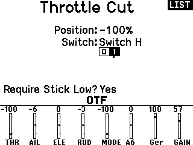
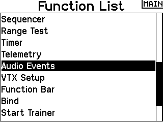
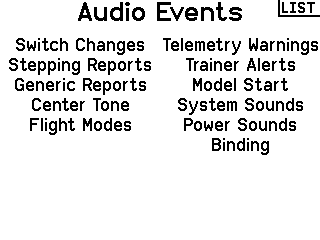
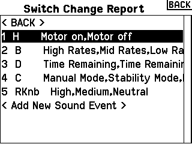

Knapplayout
Alla sändare kan programmeras så att knappar och brytare får de funktioner du själv vill ha – det är till stor del en smaksak. Innan du bestämmer dig kan det dock vara bra att tänka igenom hur du flyger. Vänster spak är ofta lättare att släppa under flygning, vilket gör att knappar och brytare på vänster sida kan vara enklare att använda för funktioner som du använder ofta.
Vilken riktning en knapp ska ha – ”från dig” eller ”mot dig” – är också en smaksak. Ett vanligt och praktiskt sätt att tänka är att när alla knappar står bort från dig ska modellen alltid vara fullt kontrollerbar. Skulle något oväntat hända kan du då i panikläge slå alla knappar bort från dig och ändå ha kontroll.
En stark rekommendation är däremot att samma funktion på samma knapp för alla dina modeller. Då slipper du tänka efter i luften och minskar risken för misstag.
Nedan visas ett exempel på knapplayout på en Spektrum DX9, men de flesta sändare har liknande placering av knappar och brytare. Ta tänket med dig och använd det på andra märken.

Throttle cut - En säkerhet för alla
En funktion som många hoppar över är att lägga in throttle cut på modellen. Om detta inte görs innebär det en risk för både människor och utrustning. Elmodeller är tysta, och det kan räcka med att någon råkar komma åt gas-spaken för att motorn startar oväntat. Gör det därför till en vana att alltid använda throttle cut.
En bra throttle cut-lösning kontrollerar dessutom att gaspaken står på noll innan motorn kan aktiveras. Det innebär att motorreglaget måste vara i nolläge när du slår på ”motor på” – annars förblir motorn spärrad.
Throttle cut - Exempel - Spektrum NX & AirWave
Det finns redan en färdig inställning för throttle cut. Se bilderna nedan. Här används knappen "H" som throttle cut, när knappen är från dig är "motorn på" och mot dig "motorn av".Meny -> Throttle Cut
Kolla att fältet "01" efter "Switch H" har vit bakgrund på "0" och svart på "1". (Ändra bakgrund genom ändra knappen H till positionen som ska ändras och tryck sedan på hjulet för ändra)
 
Vill du ha tal som berättar när motor on/off knappen ändras, lägg in följande.
Meny -> Audio Event -> Switch Changes -> Add New Sound Event.
Välj knapp "H" och sedan ljudet "Motorn On" och sedan "Motorn off"



Throttle cut - Exempel - Flera märken med EdgeTX
I detta exempel används en 6-positionsbrytare för att välja vilket läge modellen ska vara i.
- Position 1 - Motor av
- Position 2 - Motor på - Motorn kan endast starta om gasen står under −95 %.
- Position 3 - Pit mode - Motor av samt nollställer timer.
Först skapas två "Logiska Switchar":
- L01 känner av gasreglaget i kombination med position 2 på 6-positionsbrytaren.
- L02 ”låser” värdet från L01 så att gasreglaget kan användas efter nollställning, och blockerar samtidigt motorn om brytaren inte står i position 2 (!6POS2).
Därefter läggs "Special Functions" in:
- SF1 gör en override på throttle-kanalen (CH3) när L02 inte är aktiv (!L02).
- SF2–SF4 spelar upp röstmeddelanden för vald position.
- SF5 nollställer timern när Pit mode är aktivt.